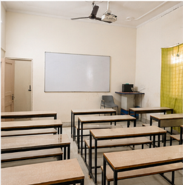
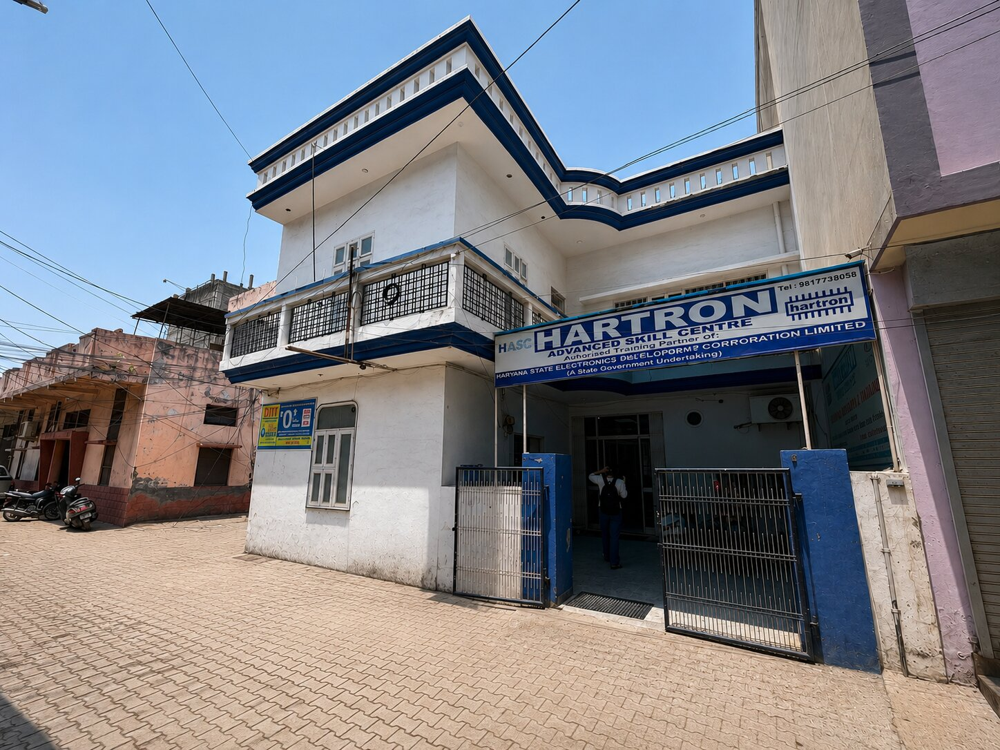

Government-recognised IT courses, taught in person in Hisar.
O Level, CCC, BCC, ACC, ECC, Tally and programming — at fees local families can manage, with easy installment options.
कंप्यूटर सीखें, सरकारी नौकरी की तैयारी करें — हिसार में, आसान किस्तों पर।
A trusted name in computer education in Hisar
Run by a society educating in Hisar since 2001 — NIELIT-accredited (DOEACC), with government-recognised certifications and friendly, in-person teaching you can rely on.
NIELIT accredited
Six NIELIT programs under one roof — certifications with lifetime validity and pan-India recognition.
In-person classes
Hands-on training at our Hisar campus — labs, real machines, and teachers you can ask in the room.
Affordable + installments
Fees set for local families, with easy installment options that keep quality computer education affordable for everyone.
Programming by an IIT alumnus
Coding courses led by Prashant Singhla, B.Tech IIT Kanpur — understand the why, not just the how.
Twelve courses, one institute
Six NIELIT-accredited programs for government-job eligibility, plus Tally for accounting careers and modern programming languages.
O Level
FlagshipFoundation IT diploma · DOEACC certified · valid for government jobs.
CCC
Most PopularCourse on Computer Concepts · mandatory for many Haryana govt clerical posts.
Tally Prime
VocationalAccounting, GST, inventory and payroll — practical Tally for real work.

Fulfil your college internship — with real AI skills
University internship is now compulsory for many degrees. Our AI internship programs let you fulfil that requirement while learning the skills employers want — from AI-powered Office and Excel to Generative AI, cyber security, digital marketing and no-code website building.
- Industry-relevant training with expert mentors
- Offline & online options · flexible 45-day tracks
- Completion certificate for your university record
Inside our Hisar campus
Classrooms, computer labs and the people who make DIIT run.



Guidance for students & parents
Plain-language advice on courses, careers and what's changing in computer education.

Why DIIT is among the best NIELIT-accredited institutes in Hisar
What accreditation really means for your certificate and your job prospects.
The real benefits of doing an O Level course
Why this one-year diploma still opens government and private-sector doors.
Why AI courses are exploding in popularity
What's driving demand — and how students in Hisar can ride the wave.
Visit our campus in Hisar
Between Camp Chowk & Matka Chowk, Behind IDBI Bank, Hisar, Haryana. Open Monday–Saturday, 8 AM – 6 PM.
Frequently asked questions
Quick answers about DIIT, our courses and admissions in Hisar.